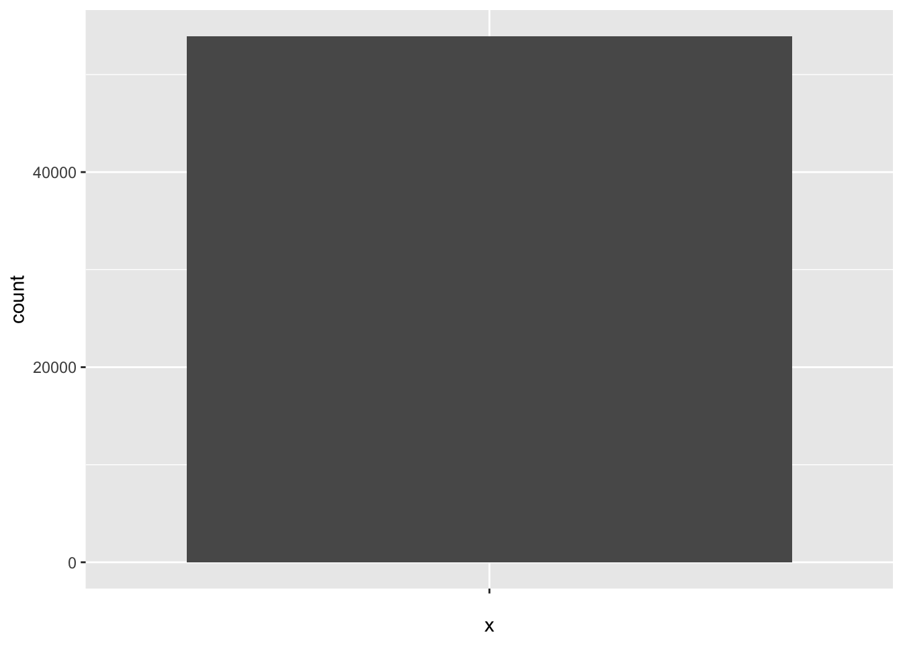
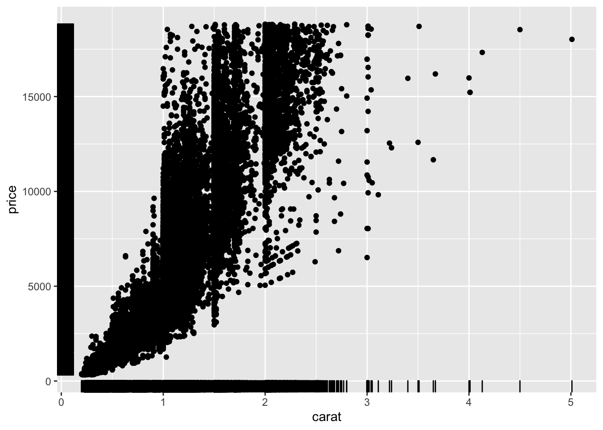

library(ggplot2)
ggplot(diamonds, aes(carat))
ggplot() : fonction principale, crée et renvoie le graphique, en définissant quelles données sont représentées.
aes() : définit les attributs esthétiques.
geom_xxx() : définit la couche attributs géométriques.
stat_xxx() : définit la couche transformations statistiques.
scale_xxx() : définit la couche échelles.
coord_xxx() : définit la couche système de coordonnées.
facet_xxx() : définit la couche découpage en facettes.
theme_xxx(), labs(), xlab(), ylab(), ggtitle() : pour personnaliser le graphique.
Seule aes() s’utilise à l’intérieur des autres fonctions, toutes les couches étant gérées de manière indépendante.
Possibilité d’enregistrer la sortie de ggplot() dans une variable, puis de lui ajouter des couches. Appeler la variable pour afficher le graphique.
Couche principale : avec ggplot() et aes(), définition des données à représenter et des axes de coordonnées.
Exemple avec les données diamonds :
library(ggplot2)
ggplot(diamonds, aes(carat))
Couche attributs géométriques : ajout de la représentation souhaitée pour les données définies dans ggplot().
Exemple : ajout de l’histogramme de la variable carat :
ggplot(diamonds, aes(carat)) + geom_histogram()
g = ggplot(diamonds, aes(carat))
g+geom_histogram()
g = ggplot(diamonds, aes(carat))+geom_histogram()
gg = ggplot(diamonds, aes(carat))+geom_histogram()
g+ggtitle("Distribution des carats")g = ggplot(diamonds, aes(carat))+geom_histogram()
g+ggtitle("Distribution des carats")+theme_classic()g = ggplot(diamonds, aes(carat))+geom_histogram()
g+ggtitle("Distribution des carats")+theme_light()g = ggplot(diamonds, aes(carat))+geom_histogram()
g+ggtitle("Distribution des carats")+xlab("Carats")g = ggplot(diamonds, aes(carat))+geom_histogram()
g+ggtitle("Distribution des carats")+ylab("Effectif")g = ggplot(diamonds, aes(carat))+geom_histogram()
g+labs(title="Distribution des carats",
x="Carats", y="Effectif")ggplot(diamonds, aes(x=""))+geom_bar()
ggplot(diamonds, aes(x="", fill=cut))+geom_bar()Représenter l’histogramme de la distribution de la variable Sepal.Length du jeu de données iris avec les valeurs par défaut.
Changer le nombre de classes (=bins) souhaitées dans l’histogramme afin d’obtenir une distribution moins variable (indication : options bins ou binwidth dans la couche geom_histogram).
Changer le thème afin d’obtenir un graphique sans fond gris.
Ajouter un titre et des noms adaptés aux axes sur le graphique obtenu.
Représenter la distribution des espèces sous forme de barre empilée. Ajouter un titre et enlever le nom de l’axe des abcisses.
Représenter la distribution de la variable Sepal.Length conditionnellement à l’espèce sous forme de boîtes à moustaches (indication : geom_boxplot). Ajouter un titre et changer les noms des axes.
Changement d’échelle en utilisant une formule dans aes(),
Changement d’échelle en utilisant les variables crées par les fonctions du type geom_xxx(), de type ..xxx..,
Changement d’échelle en ajoutant une couche avec les fonctions du type scale_aspect esthétique à modifier_type de l’aspect().
Exemple : changer l’effectif en fréquence ou en pourcentage dans un diagramme.
ggplot(diamonds, aes(x="", fill=cut))+
geom_bar(aes(y=..count../sum(..count..)))ggplot(diamonds, aes(x="", fill=cut))+
geom_bar(position = "fill")library(scales)
ggplot(diamonds, aes(x="", fill=cut))+
geom_bar(position = "fill")+
scale_y_continuous(labels = percent)Suivant le type de graphique souhaité, il peut être nécessaire de changer le type de coordonnées représentées.
Exemples typiques:
Par défaut, ggplot() représente les variables en coordonnées cartésiennes.
Changement de coordonnées effectué en ajoutant une couche avec les fonctions du type coord_xxx().
ggplot(diamonds, aes(x = "", fill = cut)) +
geom_bar(position = "fill", width = 1) +
scale_y_continuous(labels = percent) +
coord_polar(theta = "y")ggplot(diamonds, aes(x = "", fill = cut)) +
geom_bar(position = "fill", width = 1) +
scale_fill_brewer(palette = "Set2") +
scale_y_continuous(labels = percent) +
coord_polar(theta = "y") +
theme_minimal() +
theme(axis.title = element_blank()) +
labs(fill = "Variable cut")Reprendre l’histogramme créé dans l’exercice 1. Changer l’échelle des ordonnées afin d’avoir une représentation en densité (indication : variable ..density.. en sortie de la couche geom_histogram). Ajouter un titre et changer le nom des axes.
Représenter sur le même graphique un histogramme par espèce.
Représenter la distribution des espèces sous forme de diagramme en barres horizontales (indication : coord_flip()). Ajouter un titre et changer les noms des axes.
Refaire le même graphique avec une distribution en pourcentages.
Représenter la distribution des espèces sous forme de diagramme circulaire avec les valeurs par défaut.
Refaire le graphique précédent avec une représentation propre et un titre.
g = ggplot(diamonds, aes(carat, price))+geom_point()
g+geom_rug()
g = ggplot(diamonds, aes(carat, price))+geom_point()
g+geom_rug()+geom_smooth()g = ggplot(diamonds, aes(carat, price))+geom_point()
g+geom_smooth(method = "lm", se = FALSE)g = ggplot(diamonds, aes(carat, price, shape=cut, col=cut))+geom_point()
g+geom_smooth(se = FALSE)g = ggplot(diamonds, aes(carat, price))+geom_point()
g+geom_smooth(se=FALSE)+facet_wrap(facets=~cut)g = ggplot(diamonds, aes(carat, price))+geom_point()
g+geom_smooth(se=FALSE)+facet_wrap(facets=~cut, ncol=2)g = ggplot(diamonds, aes(color, carat))+geom_boxplot()
g+facet_grid(facets=~cut)g = ggplot(diamonds, aes(carat))+geom_histogram()
g+facet_grid(facets=cut~.)g = ggplot(diamonds, aes(carat))+geom_histogram()
g+facet_grid(facets=cut~., scales="free_y")g = ggplot(diamonds, aes(carat, price)) + geom_point() +
geom_smooth(method = "lm", fullrange = T)
g+facet_grid(facets = color ~ cut)Représenter le nuage de points des longueurs de Sépales en fonction de leurs largeurs. Ajouter la courbe de régression.
Refaire la question précédente avec, sur le même graphique, des formes et des couleurs de points différents pour chaque espèce. Ajouter les droites de régression et les indicateurs de valeurs par espèce.
Séparer le graphique précédent en facettes, avec un graphique par espèces.
Reprendre l’histogramme en densité créé dans l’exercice 2. Représenter sur une colonne un histogramme par espèce d’iris.
Changement de position : couche theme(legend.position = xxx) avec xxx = “left”, “top”, “right”, “bottom”, “none” (supprime la légende).
Changement de titre : couche labs(xxx=nom) s’il existe une variable pour xxx, où xxx=fill, color, etc… Suppression du titre avec nom = element_blank().
Changement de l’ordre des modalités : couche scale_xxx_discrete(limits = c(yyy)), où
Changement des modalités dans la légende : couche scale_xxx_hue(labels = ) s’il existe une variable pour xxx, où xxx=fill, color, etc….
Fonction gather() (librairie tidyr) : crée une table longue en déployant la table de données (=table large) sur 2 colonnes (key,value), où key est le nom de la variable, et value sa valeur pour chaque observation.
Exemple : déploiement de la table diamonds sur les variables carat, price, depth et cut
library(dplyr)
library(tidyr)
diamonds %>% select(carat, price, depth, cut) %>%
gather()Passage d’une table \(nobs\times nvar\) à une table \(nobs*nvar \times 2\).
Exemple : garder les valeurs de carat pour chaque observation :
diamonds %>% select(carat, price, depth, cut) %>%
gather(-carat, key="key", value="value")diamonds %>% select(carat,price,depth) %>%
gather(-carat, key = "var", value = "value") %>%
ggplot(aes(carat, value))+geom_point()+
facet_grid(facets=var~., scales="free_y")diamonds %>% select(carat,price,depth, cut) %>%
gather(-carat, -cut, key = "var", value = "value") %>%
ggplot(aes(carat, value, color=cut))+geom_point()+
facet_grid(facets=var~., scales="free_y")Reprendre le graphique de la distribution des espèces en barre empilée créé dans l’exercice 1.
Représenter les nuages de points des trois variables Sepal.Length, Petal.Width et Petal.Length en fonction de la variable Sepal.Width.
Reprendre le graphique précédent et colorer les points suivant les espèces.
Librairie forcats : permet de réordonner les modalités d’une variable selon les valeurs d’une autre variable.
Deux fonctions :
fct_reorder() : répartition par ordre croissant ou décroissant,
fct_shuffle() : répartition aléatoire.
Exemple : représentation de la moyenne de price en fonction des valeurs de cut, en réordonnant les valeurs de la table résumée df suivant les modalités de cut
df = diamonds %>%
group_by(cut) %>%
summarise(
mean = mean(price, na.rm = T),
sd = sd(price, na.rm = T)
)ggplot(df, aes(cut, mean))+geom_point()library(forcats)
ggplot(df, aes(fct_reorder(cut, mean), mean))+geom_point()ggplot(
df,
aes(fct_reorder(cut, mean, .desc = TRUE), mean)
)+
geom_point()ggplot(df, aes(fct_shuffle(cut), mean))+geom_point()Trois syntaxes donnant le même résultat :
ggplot(diamonds, aes(x = price)) + geom_histogram()ggplot(diamonds) +
geom_histogram(mapping = aes(x = price))ggplot() +
geom_histogram(data = diamonds, mapping = aes(x = price))ggplot(diamonds, aes(cut, price, color = cut)) +
scale_color_brewer(palette = "Set2") +
scale_fill_brewer(palette = "Set2") +
geom_boxplot(show.legend = FALSE) +
geom_errorbar(data = df,
mapping = aes(y = mean,
ymin = mean - sd,
ymax = mean + sd),
col = "gray70", width = .4, size = 1) +
geom_point(data = df,
mapping = aes(y = mean),
col = "steelblue", size = 2) +
theme_light()Reprendre les 3 histogrammes par espèce créés dans l’exercice 3. Ajouter une ligne verticale représentant la moyenne pour chaque espèce (indication : geom_vline).
Créer une table de données df résumant la variable Sepal.Length par ses moyennes et écart-types par espèce.
Reprendre les boîtes à moustaches crées dans l’exercice 1. Colorer chaque boîte à moustaches et enlever la légende.
Ajouter sur chaque boîte à moustache la moyenne (sous forme de point) et l’écart-type (sous forme de barre).
Refaire le graphique précédent en réordonnant les modalités par moyenne décroissante.
Reprendre les données de la banque mondiale. Créer deux tables (une large et une longue) avec uniquement les valeurs estimées. Créer un indicateur de données manquantes dans la table longue.
Représenter sur un graphique l’évolution du pourcentage de données manquantes en fonction de l’année. Indication : changer les étiquettes de la variable annee en valeurs numériques
as.numeric(substring(annee, 2))Créer la table longue restreinte aux valeurs du contrôle de la corruption et représenter sa distribution en fonction de l’année.
Représenter la courbe de l’évolution en moyenne en fonction de l’année. Mettre des noms et un titre appropriés au graphique.
Ajouter au graphique précédent l’évolution des pays “France”, “Somalia” et “Denmark”, avec une légende correcte ainsi qu’une couleur par pays.
Carte choroplèthe : carte géographique dont chaque zone est colorée selon une mesure statistique.
Etape 1 : charger les données géographiques, par exemple directement sur le web avec geojson_read()
library(geojsonio)
etats = geojson_read(
'https://datahub.io/core/geo-countries/r/countries.geojson',
what = "sp")où l’option what règle le format d’importation. Ici, on importe au format “spatial”.
Ici, etats contient toutes les informations nécessaires à la constitution de la carte (latitudes, longitudes, noms des pays, etc…)
etats_f = fortify(etats)
ggplot(etats_f, aes(long, lat, group = group)) +
geom_polygon(color = "white") +
theme_void()où theme_void() indique un thème vide.
library(tibble) # pour rownames_to_column
etats@data$var = runif(nrow(etats@data))
etats_f = fortify(etats)
etats_fj = etats_f %>%
inner_join(etats@data %>% rownames_to_column("id"),
by = "id")
ggplot(etats_fj,
aes(long, lat, group = group, fill = var)
) +
geom_polygon(color = "white") +
theme_void()Personnalisation et interaction utilisateur avec la librairie leaflet (voir ici pour une présentation complète de la librairie).
Création d’une carte en 3 étapes :
Exemple avec les données géographiques etats
library(leaflet)
leaflet(etats) %>%
addTiles() %>%
addPolygons()palette = colorBin("YlOrRd", domain = etats$var)leaflet(etats) %>%
addTiles() %>%
addPolygons(fillColor = ~palette(var),
fillOpacity = .5)palette = colorBin(
"magma",
domain = etats$var,
bins = seq(0, 1, by = .2)
)leaflet(etats) %>%
setView(lat = 0, lng = 0, zoom = 1) %>%
addTiles() %>%
addPolygons(
fillColor = ~palette(var),
fillOpacity = .5,
color = "gray30",
weight = 1.5,
opacity = 1,
dashArray = "2"
) %>%
addLegend(
pal = palette,
values = ~var,
opacity = 0.8,
title = "Variable aleatoire",
position = "bottomright"
)